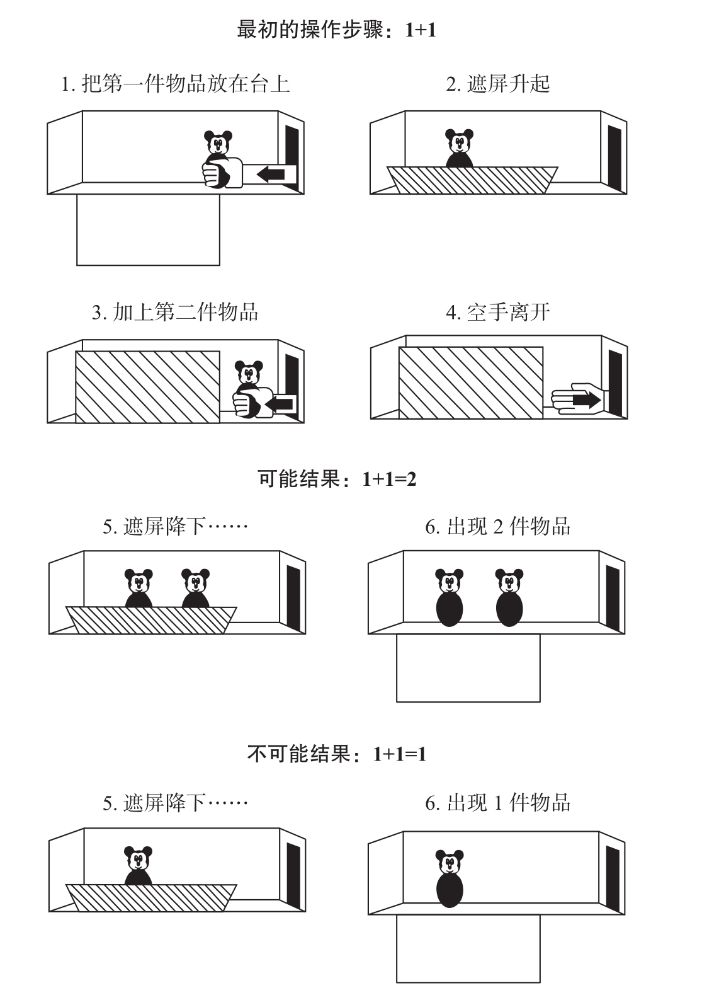

我们现在要将婴儿和其他物种的行为进行对比。我们在上一章看到，黑猩猩能够进行简单的加法运算，比如，它们会将2个橙子和3个橙子相加，并得出近似的答案。幼小的婴儿是否也能做到这一点呢？乍一看，这似乎是一个相当大胆的假设。我们更倾向于认为，对数学知识的习得发生在幼儿园阶段。20世纪90年代，一个突破旧观念的观点终于得到实证研究的证实：计算能力在婴儿一岁前就已存在。迄今为止，科学界进行了许多有关婴儿和动物数学知觉研究的实验，因此完全有能力进行这种实验，并能够获得引人瞩目的研究结果。
1992年，卡伦·温有关4至5个月大的婴儿做加减法的著名论文刊登在《自然》杂志上14。这位年轻的美国科学家运用了一种简单而富有创造性的设计，这一设计的依据是婴儿对不可能事件的探测能力。几个更早的实验显示，在出生的第一年中，当婴儿看到违反基础物理法则的、“魔术般”的事件时，他们会表现出强烈的疑惑15。比如，如果婴儿看到某物品在失去支撑的情况下于半空中保持悬浮状态时，他们会观察这个场景，并感到难以置信。同样，当婴儿看到暗示2件物品占据同一个空间位置的场景时，他们也会表现得很惊讶。如果人们将一件物品藏在遮屏后面，当遮屏降下后，若婴儿没能再看到这件物品，他们会感到震惊。顺便提一下，这种发现证明：与皮亚杰的理论相反，对于5个月大的婴儿来说，“看不见”（out of sight）不等于“消失了”（out of mind）。我们现在知道，1岁以下的儿童无法通过皮亚杰的客体永久性测试与他们不成熟的前额叶皮层有关，前额叶皮层的不成熟限制了他们伸手够物的动作。他们不去伸手够藏起来的物品，并不代表他们认为该物品已经不存在了16。
在所有此类情境中，与不涉及违背物理规则的控制组相比，婴儿的惊讶体现在对场景注视时间的显著增加上。卡伦·温的设计的诀窍在于，她将这种方式用于探测婴儿的数感。她给婴儿展示一些表现数字转变过程的事件，比如，一个对象加另一个对象，并探测婴儿能否精确地预期到结果。
到达实验室之后，4个半月大的被试们会发现一个木偶剧台，剧台正面有可以活动的遮屏（见图2-3）。实验者拿着一个米老鼠玩具在剧台的一边出现，并将它放置在台上。之后，遮屏就会升起，挡住玩具。接着，实验者伸出手将另一个米老鼠玩具放置在台上，然后把空着的手缩回去。事件的整个过程是对“1+1”的具体描述：起初，遮屏后只有1个玩具，之后加上了1个。婴儿并没有同时看到2个玩具，而是先看到1个，再看到1个。那么，他们能否推测出遮屏后应该有2个米老鼠玩具呢？

卡伦·温的实验表明4个半月大的婴儿期望“1+1”的结果是2。首先，一件物品被藏在遮屏后。之后加上另一个完全相同的玩具。最后，遮屏降下，有时台上会有2个玩具，有时则只有1个（另一个已在被试不知情的情况下被移走了）。婴儿对不可能事件“1+1=1”的注视时间普遍长于对可能事件“1+1=2”的注视时间，这表明婴儿期望看到有2件物品。
图2-3 卡伦·温的实验
资料来源：改编自Wynn, 1992。
为了找到答案，实验者设计了一个意想不到的场景：当遮屏降下时只有1个米老鼠玩具！在被试不知情的情况下，2个玩具中的1个已经通过暗门被移走了。为了评估婴儿的惊讶程度，实验者记录了他们关注“1+1=1”这一不可能情况的时间，并与他们关注可预料情况“1+1=2”的时间做比较。相较于可能事件“1+1=2”，婴儿对错误加法“1+1=1”的关注时间更长，平均为1秒。人们可能还会对此提出反对意见，认为婴儿并不是真正进行了加法运算，而仅仅是因为看1个对象的时间多于看2个对象的时间。然而，这种解释是站不住脚的，因为第二组婴儿的实验反驳了这种解释。这一组的婴儿看到的是“2-1”的操作而不是“1+1”的操作。在呈现结果时，婴儿对遮屏后仍有2个物品感到惊讶，相比可能事件“2-1=1”，他们对“2-1=2”的观察时间平均长了3秒。
正如卡伦·温自己所说，对于一个故意唱反调的人，这个结果仍然不能表明婴儿能够进行准确的计算。他们可能仅仅知道在客体被添加或被移走时，客体的数量被改变了。因此，他们知道“1+1”不可能等于1、“2-1”不可能等于2，而并不知道这些操作的确切结果。不过，这种牵强的解释没有通过实证的检验。实验者可以重复“1+1”的加法操作，并给出2个或3个对象的结果。卡伦·温重复了这个过程，同样观察到，4个半月大的婴儿注视不可能结果（3个对象）的时间比注视可能结果（2个对象）的时间更长。婴儿知道“1+1”不等于1，也不等于3，而是确切地等于2，这个结果是无可辩驳的。
婴儿的这种知识使他们与老鼠以及有计算能力的天才黑猩猩舍巴处在了同一个水平（关于天才舍巴的计算能力在前面的章节已有讲述）。哈佛大学的心理学家马克·豪泽（Mark Hauser）以野生恒河猴为对象精确地重复了卡伦·温的实验17。当一只恒河猴对豪泽的出现产生兴趣并主动看向他时，豪泽会连续地将2个茄子放在盒子中。然后，在有些实验轮次中，他会在打开盒子前偷偷拿走一个茄子，与此同时，他的同事会对动物进行拍摄，以测量它们的惊奇程度。野外情境实验的研究结果十分重要且引人瞩目。恒河猴的反应比婴儿的更为强烈：当其中的一个茄子魔术般地不见了时，它们会花大量的时间仔细检查盒子。显然，人类婴儿和他们的动物近亲一样具有算术的天赋，这证实了生物能够在没有语言的条件下进行数学基础运算。
不过，卡伦·温的实验仍没有给出婴儿数学知识的实际抽象程度的线索。婴儿可能是对藏在遮屏后的物品形成了一个生动而真实的影像——一种足够精确的、能使他们立即发现任何缺失或新增物品的心理图像。也有可能他们只记住了遮屏后被加减的物品的数量，而没有关注物品的位置及特性。为了找到答案，我们需要阻止婴儿建立对物品位置和特性的精确心理模型，然后观察他们是否仍然能够预测物品的数量。艾蒂安·克什兰（Etienne Koechlin）在我们的巴黎实验室所进行的实验正是建基于这个观点18。该实验设计与卡伦·温的实验相似，但是在此实验中，物品被放置在一个缓慢旋转的转盘上，这样即便物品藏在遮屏后面时仍能保持不断运动的状态，因此，要预测它们在遮屏降下后的位置是不可能的，婴儿无法形成对预期场景的精确心理表征，被试唯一能够构建的就是对两个位置不明的旋转物品的抽象表征。
令人惊奇的是，实验结果表明，4个半月大的婴儿完全不会被物品移动所迷惑。他们仍会惊讶于不可能事件“1+1=1”和“2-1=2”。因此，他们的行为并不依赖于对物品确切位置的预期。他们并不期望看到遮屏后物品的某种精确排列，而只期望看到遮屏后只有不多不少2件物品。来自美国佐治亚理工学院的心理学家托尼·西蒙（Tony Simon）和他的同事们也发现，婴儿在进行数字计算时并不会注意遮屏后物品的精确特性19。与年龄更大的儿童不同，4至5个月大的婴儿在算术运算的过程中并不会因为遮屏后物品外观发生变化而感到惊奇。如果遮屏后放置了2个米老鼠玩具，当遮屏降下后出现2个红球而不是米老鼠时，他们不会感到震惊。但是，如果只能看到1个球，他们的注意就会被高度唤起。对于婴儿的数字处理系统来说，米老鼠变球，或者青蛙变王子，都是可以接受的转换。只要没有物品消失或被重新创造，他们就会认为此操作在数量上是正确的，也就不会表现得很惊讶。相反，一件物品的消失或者无法解释的复制，就显得不可思议了，因为它违背了我们内心深处的数量预期。婴儿不仅能够注意到少量物品的数量，而且他们的数感已足够复杂，不会因物品的移动或物品特性的突然改变而感到受骗。